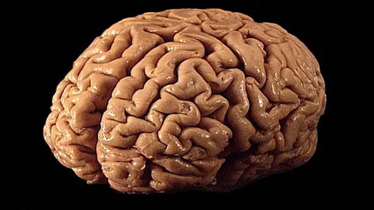

⇒
Something in the world…
⇒
A property of something that can be verified…
⇒

⇓
⇒
⇓
⇐
“Twin Earth is very much like Earth: in fact, people on Twin Earth even speak English.” (Putnam 1973)
“To the extent that formal (distributional) structure can be discovered in discourse, it correlates in some way with the substance of what is being said…” (Harris 1954)
(From the Corpus of Contemporary American English)
“And they say, But she’s completely herself. There’s no bullshit, she knows what she wants. She’s like a heat-seeking missile.” (LA Times, 2017)
“…I won’t testify against you.” I said, “Bullshit, Kate, you’ve got nothing to testify about.” (SanFranChron, 1995)
“And indeed, there are those folks who think the Oscars are total bullshit. They consider the award to be the real-life equivalent to the Montgomery Burns Award for Outstanding Achievement in the Field of Excellence” (Salon, 2016)
Related by Fania Pascal (Frankfurt 1986):
I had my tonsils out and was in the Evelyn Nursing Home feeling sorry for myself. Wittgenstein called. I croaked: “I feel just like a dog that has been run over.” He was disgusted: “You don’t know what a dog that has been run over feels like.”
For the essence of bullshit is not that it is false but that it is phony. In order to appreciate this distinction, one must recognize that a fake or a phony need not be in any respect (apart from authenticity itself) inferior to the real thing. What is not genuine need not also be defective in some other way. It may be, after all, an exact copy. What is wrong with a counterfeit is not what it is like, but how it was made. This points to a similar and fundamental aspect of the essential nature of bullshit: although it is produced without concern with the truth, it need not be false. The bullshitter is faking things. But this does not mean that he necessarily gets them wrong.
Some criteria:
Possible to be unaware of any or all of these.
Rules (according to Lewis):
What are languages?
What is language?
Lewis introduces a convention to define language use:
These are pragmatic conventions.
What about conventions relating to form?
Introduction to Semantics